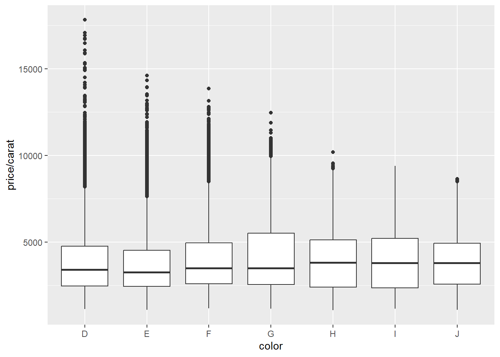

Chapter 10 The ggplot world and BrailleR
The use of the ggplot style of graph production has increased markedly since its inception with the ggplot2 package (Wickham, Chang, et al. 2022) now being one of the most used R packages. The “gg” is short for the “grammar of graphics” but the R code used to create an extremely wide range of graphs is seldom human-interpretable with ease. Creation of suitable support functionality via the VI() command is very definitely required. An initial attempt to extract any useful infromation from these graphs was contributed to the BrailleR package by Tony Hirst. Significant improvement has been made by Debra Warren as part of her postgraduate work under the supervision of Paul Murrell at the University of Auckland. Much of what is displayed in this chapter is only worth offering because of Debra’s work and the interactions had between her, Paul and I in the second half of 2017.
In 2021, the plot.ggplot() command in the ggplot2 package was updated to automatically call BrailleR’s VI() function if the user has specified they are blind. The GoBlind() and GoSighted() commands will toggle the automated use of VI() on and off respectively. The default starting mode is to get the automated VI() output.
The search was then on for someone to come on board and start ramping up the number of different graph types that VI() can handle. James Thompson was a summer student who climbed into the task in November 2022. One of his first questions was to ask me when BrailleR would take the bold step into version 1.x.y, and maybe his efforts will get us close.
N.B. the commands here are minor alterations to the commands presented in Wickham (2009); any major changes will be explicitly noted, but do note the use of the native R pipe |> instead of the older %>% pipe. All plots are created using the figure numbers from Wickham (2009) or the page numbers if no figure number was given. They are then automatically investigated using the VI() command from the BrailleR package which has not needed to be explicitly called since v0.32.0 of BrailleR and v3.3.5 of the ggplot2 package.
You will need some additional packages to the BrailleR package to be loaded to follow along with the examples in this chapter. Do this by issuing the commands:
library(BrailleR)
library(ggplot2) Note that one data set used for these examples is created by Wickham (2009) while the others are included in the ggplot2 package.
set.seed(1410)
dsmall <- diamonds[sample(nrow(diamonds), 100),] One important note for the graphs in this chapter is the difference in the way they appear here, as compared to the original figures of Wickham (2009) where differing height and width parameters have been set for each graph. For example, in the following graph, the points are smaller than in the original figure, and the aspect ratio is slightly different. The consequence is that this graph looks less cluttered than does the original.
p11a = qplot(carat, price, data = diamonds) Warning: `qplot()` was deprecated in ggplot2 3.4.0.p11a
Figure 10.1: First graph on page 11 of Wickham (2009)
This is an untitled chart with no subtitle or caption.
It has x-axis 'carat' with labels 0, 1, 2, 3, 4 and 5.
It has y-axis 'price' with labels 0, 5000, 10000 and 15000.
The chart is a set of 53940 big solid circle points.Note that if you do not want to generate the graph but want to know what its text description has to offer, you can use the |> pipe operator as follows:
fig2.2a = qplot(carat, price, data = dsmall, colour = color)
fig2.2a |> VI() This is an untitled chart with no subtitle or caption.
It has x-axis 'carat' with labels 1, 2, 3 and 4.
It has y-axis 'price' with labels 0, 5000, 10000 and 15000.
There is a legend indicating colour is used to show color, with 7 levels:
D shown as very deep purple colour,
E shown as vivid purplish blue colour,
F shown as moderate blue colour,
G shown as vivid bluish green colour,
H shown as brilliant green colour,
I shown as vivid yellow green colour and
J shown as vivid greenish yellow colour.
The chart is a set of 100 big solid circle points.N.B. It is not necessary to keep the graphs for BrailleR to do its magic, so from here onwards, they will not be explicitly stored and called back as was done above.
We haven’t been able to tell what exact colour was used in the Wickham (2009) rendering of this graph, but there has obviously been some minor alteration of the colour palette being used by the ggplot2 package over the years.
qplot(carat, price, data = dsmall, shape = cut) Warning: Using shapes for an ordinal variable is not advised
Using shapes for an ordinal variable is not advisedFigure 10.2: Right pane of Figure 2.2
This is an untitled chart with no subtitle or caption.
It has x-axis 'carat' with labels 1, 2, 3 and 4.
It has y-axis 'price' with labels 0, 5000, 10000 and 15000.
There is a legend indicating shape is used to show cut, with 5 levels:
Fair shown as solid circle shape,
Good shown as solid triangle shape,
Very Good shown as solid square shape,
Premium shown as plus shape and
Ideal shown as boxed X shape.
The chart is a set of 100 points.To get semi-transparent points:
qplot(carat, price, data = diamonds, alpha = I(1/100)) 
Figure 10.3: Middle pane from Figure 2.3
This is an untitled chart with no subtitle or caption.
It has x-axis 'carat' with labels 0, 1, 2, 3, 4 and 5.
It has y-axis 'price' with labels 0, 5000, 10000 and 15000.
The chart is a set of 53940 big solid circle points.
It has alpha set to 0.01.To add a smoother (default is loess for n<1000):
qplot(carat, price, data = dsmall, geom = c("point", "smooth")) `geom_smooth()` using method = 'loess' and formula = 'y ~ x'
Figure 10.4: Left pane of Figure 2.4
This is an untitled chart with no subtitle or caption.
It has x-axis 'carat' with labels 1, 2, 3 and 4.
It has y-axis 'price' with labels 0, 5000, 10000, 15000, 20000 and 25000.
It has 2 layers.
Layer 1 is a set of 100 big solid circle points.
Layer 2 is a 'lowess' smoothed curve with 95% confidence intervals covering 13% of the graph.10.1 Plotting a continuous variable against a categorical variable
qplot(color, price / carat, data = diamonds, geom = "jitter")
Figure 10.5: Left pane of Figure 2.8
This is an untitled chart with no subtitle or caption.
It has x-axis 'color' with labels D, E, F, G, H, I and J.
It has y-axis 'price/carat' with labels 5000, 10000 and 15000.
The chart is a set of 53940 big solid circle points.qplot(color, price / carat, data = diamonds, geom = "boxplot") 
This is an untitled chart with no subtitle or caption.
It has x-axis 'color' with labels D, E, F, G, H, I and J.
It has y-axis 'price/carat' with labels 5000, 10000 and 15000.
The chart is a boxplot comprised of 7 boxes with whiskers.
There is a box at x=D.
It has median 3410.53. The box goes from 2455 to 4749.31, and the whiskers extend to 1128.12 and 8183.33.
There are 338 outliers for this boxplot.
There is a box at x=E.
It has median 3253.66. The box goes from 2430.3 to 4508.41, and the whiskers extend to 1078.12 and 7616.39.
There are 593 outliers for this boxplot.
There is a box at x=F.
It has median 3494.32. The box goes from 2587.1 to 4947.22, and the whiskers extend to 1168 and 8477.5.
There are 585 outliers for this boxplot.
There is a box at x=G.
It has median 3490.38. The box goes from 2538.24 to 5500, and the whiskers extend to 1139.02 and 9937.2.
There are 119 outliers for this boxplot.
There is a box at x=H.
It has median 3818.89. The box goes from 2396.88 to 5127.28, and the whiskers extend to 1051.16 and 9220.
There are 13 outliers for this boxplot.
There is a box at x=I.
It has median 3779.74. The box goes from 2344.65 to 5196.75, and the whiskers extend to 1151.72 and 9397.5.
There are 0 outliers for this boxplot.
There is a box at x=J.
It has median 3780. The box goes from 2562.87 to 4927.95, and the whiskers extend to 1080.65 and 8426.13.
There are 3 outliers for this boxplot.When seeking to use shading or opaqueness to describe the density of the points, the fact the size of the points has an impact on the opaqueness is not currently realised by BrailleR.
qplot(color, price / carat, data = diamonds, geom = "jitter", alpha = I(1 / 50)) 
Figure 10.6: Middle pane of Figure 2.9
This is an untitled chart with no subtitle or caption.
It has x-axis 'color' with labels D, E, F, G, H, I and J.
It has y-axis 'price/carat' with labels 5000, 10000 and 15000.
The chart is a set of 53940 big solid circle points.
It has alpha set to 0.02.10.1.1 Univariate plots
qplot(carat, data = diamonds, geom = "histogram") `stat_bin()` using `bins = 30`. Pick better value with `binwidth`.Figure 10.7: Left pane of Figure 2.10
This is an untitled chart with no subtitle or caption.
It has x-axis 'carat' with labels 0, 1, 2, 3, 4 and 5.
It has y-axis '' with labels 0, 5000, 10000 and 15000.
The chart is a bar chart with 30 vertical bars.Warning: This figure does look different to the original in Wickham (2009) ins spite of using the same code and same data.
qplot(carat, data = diamonds, geom = "density") Figure 10.8: Right pane of Figure 2.10
This is an untitled chart with no subtitle or caption.
It has x-axis 'carat' with labels 0, 1, 2, 3, 4 and 5.
It has y-axis '' with labels 0.0, 0.5, 1.0 and 1.5.
The chart is a density graph that VI cannot process.qplot(carat, data = diamonds, geom = "histogram", binwidth = 0.01, xlim = c(0,3)) Warning: Removed 32 rows containing non-finite values (`stat_bin()`).Warning: Removed 2 rows containing missing values (`geom_bar()`).Warning: Removed 32 rows containing non-finite values (`stat_bin()`).
Figure 10.9: Right pane of Figure 2.11
This is an untitled chart with no subtitle or caption.
It has x-axis 'carat' with labels 0, 1, 2 and 3.
It has y-axis '' with labels 0, 1000 and 2000.
The chart is a bar chart with 299 vertical bars.The data is separated by implication in the following graphs. The legend is automatically generated and has altered in appearance since the original was produced in Wickham (2009).
qplot(carat, data = diamonds, geom = "density", colour = color) 
Figure 10.10: Left pane of Figure 2.12
This is an untitled chart with no subtitle or caption.
It has x-axis 'carat' with labels 0, 1, 2, 3, 4 and 5.
It has y-axis '' with labels 0.0, 0.5, 1.0, 1.5 and 2.0.
There is a legend indicating colour is used to show color, with 7 levels:
D shown as very deep purple colour,
E shown as vivid purplish blue colour,
F shown as moderate blue colour,
G shown as vivid bluish green colour,
H shown as brilliant green colour,
I shown as vivid yellow green colour and
J shown as vivid greenish yellow colour.
The chart is a density graph that VI cannot process.qplot(carat, data = diamonds, geom = "histogram", fill = color) `stat_bin()` using `bins = 30`. Pick better value with `binwidth`.Figure 10.11: Right pane of Figure 2.12
This is an untitled chart with no subtitle or caption.
It has x-axis 'carat' with labels 0, 1, 2, 3, 4 and 5.
It has y-axis '' with labels 0, 5000, 10000 and 15000.
There is a legend indicating fill is used to show color, with 7 levels:
D shown as very deep purple fill,
E shown as vivid purplish blue fill,
F shown as moderate blue fill,
G shown as vivid bluish green fill,
H shown as brilliant green fill,
I shown as vivid yellow green fill and
J shown as vivid greenish yellow fill.
The chart is a bar chart with 30 vertical bars.
These are stacked, as sorted by color.10.1.2 Bar charts for categorical variables
qplot(color, data = diamonds, geom = "bar") #geom="bar" is the default Figure 10.12: Left pane of Figure 2.13
This is an untitled chart with no subtitle or caption.
It has x-axis 'color' with labels D, E, F, G, H, I and J.
It has y-axis '' with labels 0, 3000, 6000 and 9000.
The chart is a bar chart with 7 vertical bars.
Bar 1 is centered at 1, and length is from 0 to 6775.
Bar 2 is centered at 2, and length is from 0 to 9797.
Bar 3 is centered at 3, and length is from 0 to 9542.
Bar 4 is centered at 4, and length is from 0 to 11292.
Bar 5 is centered at 5, and length is from 0 to 8304.
Bar 6 is centered at 6, and length is from 0 to 5422.
Bar 7 is centered at 7, and length is from 0 to 2808.need to check…
qplot(color, data = diamonds, geom = "bar", weight = carat) 
Figure 10.13: Right pane of Figure 2.13
This is an untitled chart with no subtitle or caption.
It has x-axis 'color' with labels D, E, F, G, H, I and J.
It has y-axis '' with labels 0, 2500, 5000 and 7500.
The chart is a bar chart with 7 vertical bars.
Bar 1 is centered at 1, and length is from 0 to 4456.56.
Bar 2 is centered at 2, and length is from 0 to 6445.12.
Bar 3 is centered at 3, and length is from 0 to 7028.05.
Bar 4 is centered at 4, and length is from 0 to 8708.28.
Bar 5 is centered at 5, and length is from 0 to 7571.58.
Bar 6 is centered at 6, and length is from 0 to 5568.
Bar 7 is centered at 7, and length is from 0 to 3263.28.qplot(color, data = diamonds, geom = "bar", weight = carat) + scale_y_continuous("carat") 
Figure 10.14: Right pane of Figure 2.13
This is an untitled chart with no subtitle or caption.
It has x-axis 'color' with labels D, E, F, G, H, I and J.
It has y-axis '' with labels 0, 2500, 5000 and 7500.
The chart is a bar chart with 7 vertical bars.
Bar 1 is centered at 1, and length is from 0 to 4456.56.
Bar 2 is centered at 2, and length is from 0 to 6445.12.
Bar 3 is centered at 3, and length is from 0 to 7028.05.
Bar 4 is centered at 4, and length is from 0 to 8708.28.
Bar 5 is centered at 5, and length is from 0 to 7571.58.
Bar 6 is centered at 6, and length is from 0 to 5568.
Bar 7 is centered at 7, and length is from 0 to 3263.28.10.2 Time series plots
It looks like the data used in the next graph has been updated since the publication of Wickham (2009)
qplot(date, unemploy / pop, data = economics, geom = "line") 
Figure 10.15: Left pane of Figure 2.14
This is an untitled chart with no subtitle or caption.
It has x-axis 'date' with labels 1970, 1980, 1990, 2000 and 2010.
It has y-axis 'unemploy/pop' with labels 0.02, 0.03, 0.04 and 0.05.
The chart is a set of 1 line.
Line 1 connects 574 points.10.3 Path plots
year <- function(x) as.POSIXlt(x)$year + 1900
qplot(unemploy / pop, uempmed, data = economics, geom = "path", colour=year(date)) 
Figure 10.16: Right pane of Figure 2.15
This is an untitled chart with no subtitle or caption.
It has x-axis 'unemploy/pop' with labels 0.02, 0.03, 0.04 and 0.05.
It has y-axis 'uempmed' with labels 5, 10, 15, 20 and 25.
There is a legend indicating colour is used to show year(date), ranging from 1967 represented by colour dark purplish blue to 2015 shown as colour brilliant blue.
The chart is a path graph that VI cannot process.#+ scale_area() # no longer works10.4 Facets is the ggplot term for trellis’ panels
The aspect ratio for the plot region is something that needs to be considered. I’ve manually adjusted the plotting window here so that the graph more closely matches that of Wickham (2009) but it is not an exact match.
qplot(carat, data = diamonds, facets = color ~ ., geom = "histogram", binwidth = 0.1,
xlim = c(0, 3)) Warning: Removed 32 rows containing non-finite values (`stat_bin()`).Warning: Removed 14 rows containing missing values (`geom_bar()`).Warning: Removed 32 rows containing non-finite values (`stat_bin()`).Figure 10.17: Left side of Figure 2.16
This is an untitled chart with no subtitle or caption.
The chart is comprised of 7 panels containing sub-charts, arranged vertically.
The panels represent different values of color.
Each sub-chart has x-axis 'carat' with labels 0, 1, 2 and 3.
Each sub-chart has y-axis '' with labels 0, 500, 1000, 1500, 2000 and 2500.
Panel 1 represents data for color = D.
Panel 1 is a bar chart with 29 vertical bars.
Panel 2 represents data for color = E.
Panel 2 is a bar chart with 29 vertical bars.
Panel 3 represents data for color = F.
Panel 3 is a bar chart with 29 vertical bars.
Panel 4 represents data for color = G.
Panel 4 is a bar chart with 29 vertical bars.
Panel 5 represents data for color = H.
Panel 5 is a bar chart with 29 vertical bars.
Panel 6 represents data for color = I.
Panel 6 is a bar chart with 29 vertical bars.
Panel 7 represents data for color = J.
Panel 7 is a bar chart with 29 vertical bars.qplot(carat, ..density.., data = diamonds, facets = color ~ ., geom = "histogram", binwidth = 0.1, xlim = c(0, 3)) Warning: The dot-dot notation (`..density..`) was deprecated in ggplot2 3.4.0.
ℹ Please use `after_stat(density)` instead.Warning: Removed 32 rows containing non-finite values (`stat_bin()`).Warning: Removed 14 rows containing missing values (`geom_bar()`).Warning: Removed 32 rows containing non-finite values (`stat_bin()`).
Figure 10.18: Right side of Figure 2.16
This is an untitled chart with no subtitle or caption.
The chart is comprised of 7 panels containing sub-charts, arranged vertically.
The panels represent different values of color.
Each sub-chart has x-axis 'carat' with labels 0, 1, 2 and 3.
Each sub-chart has y-axis '..density..' with labels 0.0, 0.5, 1.0, 1.5 and 2.0.
Panel 1 represents data for color = D.
Panel 1 is a bar chart with 29 vertical bars.
Panel 2 represents data for color = E.
Panel 2 is a bar chart with 29 vertical bars.
Panel 3 represents data for color = F.
Panel 3 is a bar chart with 29 vertical bars.
Panel 4 represents data for color = G.
Panel 4 is a bar chart with 29 vertical bars.
Panel 5 represents data for color = H.
Panel 5 is a bar chart with 29 vertical bars.
Panel 6 represents data for color = I.
Panel 6 is a bar chart with 29 vertical bars.
Panel 7 represents data for color = J.
Panel 7 is a bar chart with 29 vertical bars.10.5 Rescaling of the axes
qplot(carat, price, data = dsmall, log = "xy") 
Figure 10.19: First graph on page 26 of
This is an untitled chart with no subtitle or caption.
It has x-axis 'carat' with labels 0.3, 1.0 and 3.0.
It has y-axis 'price' with labels 1000, 3000 and 10000.
The chart is a set of 100 big solid circle points.qplot(displ, hwy, data=mpg, facets =~ year) + geom_smooth() `geom_smooth()` using method = 'loess' and formula = 'y ~ x'Figure 10.20: Figure 3.6 of
This is an untitled chart with no subtitle or caption.
The chart is comprised of 2 panels containing sub-charts, arranged horizontally.
The panels represent different values of year.
Each sub-chart has x-axis 'displ' with labels 2, 3, 4, 5, 6 and 7.
Each sub-chart has y-axis 'hwy' with labels 20, 30 and 40.
Each sub-chart has 2 layers.
Panel 1 represents data for year = 1999.
Layer 1 of panel 1 is a set of 117 big solid circle points.
Layer 2 of panel 1 is a 'lowess' smoothed curve with 95% confidence intervals covering 9.8% of the graph.Panel 2 represents data for year = 2008.
Layer 1 of panel 2 is a set of 117 big solid circle points.
Layer 2 of panel 2 is a 'lowess' smoothed curve with 95% confidence intervals covering 9.8% of the graph.